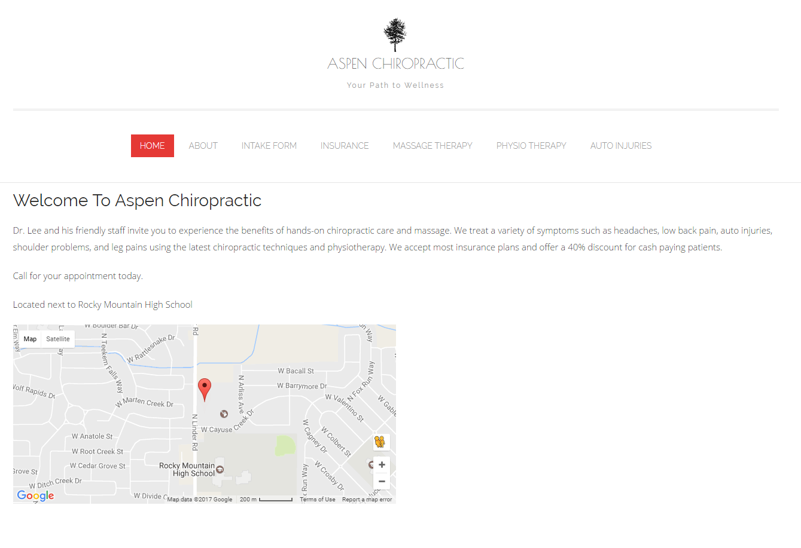

Standard 2.1
Standard 2.1 talks about color theory and design theory. It talks about controlling color properties with CSS and using graphics editors like Photoshop to enchance images. All of the examples on the right show that I have mastered this standard.
VRBO WEBSITE

Standard 2.2
Standard 2.2 talks about enhancing websites using css to edit lists and images. It talks about changes the style of lists, floating images and changing the look of the background. All of the examples on the right show that I have mastered this standard.
How To tech website

Standard 2.3
Standard 2.3 mostly talks about understanding and using the box model. It talks about using padding, margins and border properties and understanding how screen resolution and the box model work coincide. All of the examples on the right show that I have mastered this standard.
Aspen Chiropractic Website Recreation

Standard 2.4
Standard 2.4 talks about creating an effective website design and layout for websites using css. It talks about using div tags to format sections on the website. The goal is to create a design that works well for the target audience. All of the examples on the right show that I have mastered this standard.
Apple Website Recreation